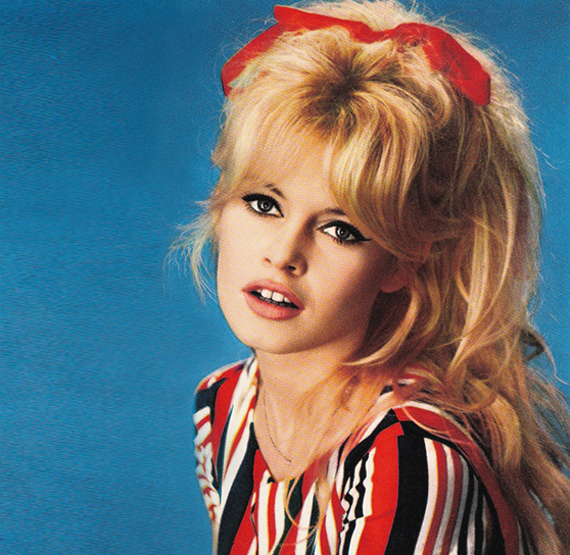

It has been described by some as the golden age of couture – that post war era when fashion returned to opulence and glamour starting of 1947, when Christian Dior introduced to the world his New Look. During that era, French couturiers like Pierre Balmain, Jacques Fath and Cristobal Balenciaga dominated world fashion with their elegant and glamorous creations. Young bloods like Hubert De Givenchy captured the eyes and heart of the young Audrey Hepburn, and the rest of the world followed her. By the end of the 1950s Coco Chanel after a few false starts after the war, was in the ascendant once again and promoted a more consumer friendly women’s wardrobe that was to herald the end of the golden age of Haute couture.
In sixties, on the other hand, emerged a lot of girl archetypes, among of them was the "Dolly Girl". Her defining characteristic is the iconic miniskirt. "Dolly Girls" also sported long hair, slightly teased, of course, and childish-looking clothing. Clothes were worn tight fitting, sometimes even purchased from a children's section. Dresses were often embellished with lace, ribbons, and other frills. The look was topped off with light colored tights. Crocheted clothing also took off within this specific style quite often. In the picture, you can see the iconic French actress, Brigitte Bardot, that was a sex symbol of her time. 1960 are frequently associated with Brigitte’s name and look.
